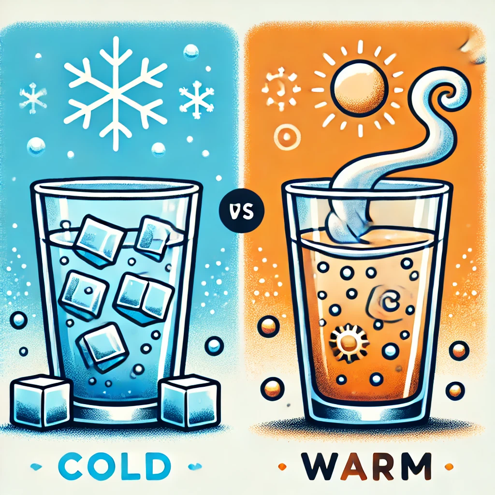
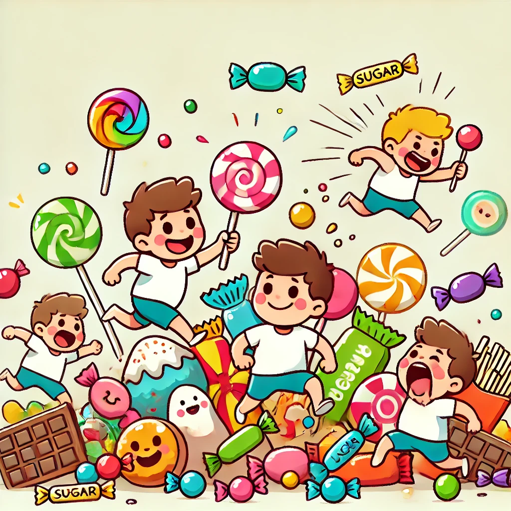
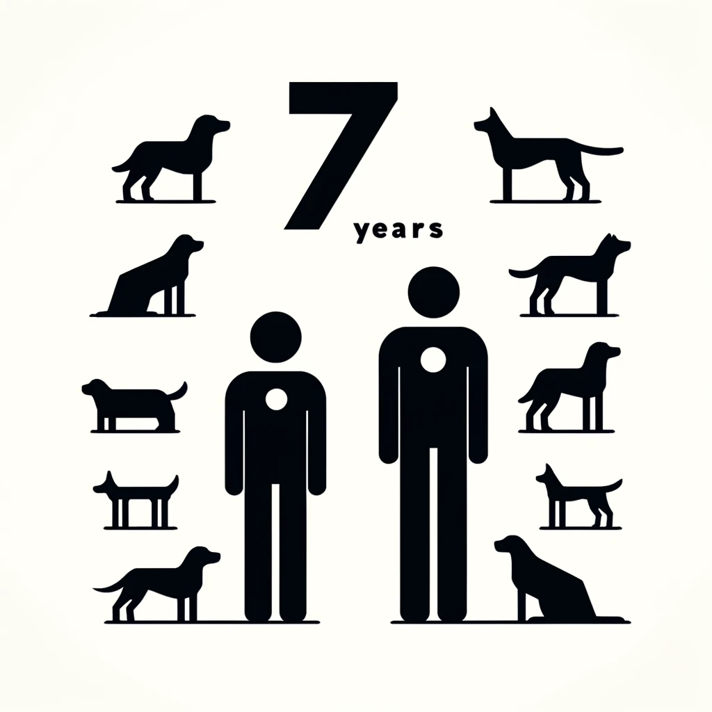

Myth or Fact

Warm water is better if you are sick
True: For many, it is easier to drink large quantities of warm water which is important when you're sick. It can soothes sore throats and relax muscles.

Do we only using 10% of our brain?
False: Brain imaging techniques like fMRI and PET scans shows that humans use nearly all of our brain.

Does sugar make kids hyper?
False: Many studies have shown that sugar does not cause hyper activity. If you notice it, it is likely caused by some other reason.
Does cold weather make you sick?
False: It is the viruses that gets you sick. However the cold temperature can weaken your immune system.
Is Red wine good for you?
False: While there is some benefits in red wine, the dangers of alchohol outweighs it. There are better ways of getting the same benefits.
Is the sun yellow?
False: the sun might look yellow to you, however its true collor is white. The atmosphere scatters the light leaving yellow.

Is every human year 7 dog years?
False: Although humans live around 7 times longer than dogs, they age differently. They age faster when young and slows down over time.